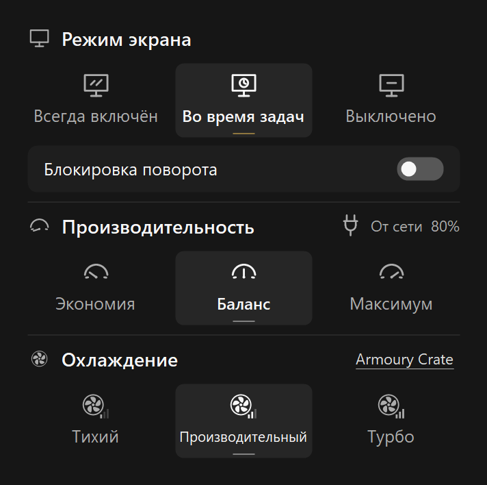

Окна и жесты
Листайте окна в карусели и закрывайте их свайпом вверх. При отсоединённой клавиатуре жесты с краёв экрана дают доступ к карусели, громкости и яркости.
ROG Flow Z13 (2025) · GZ302EA
Открывайте карусель боковой кнопкой, переключайте окна свайпами и меняйте охлаждение в боковой панели. С клавиатурой и в режиме планшета.
Windows 11 x64 · Последний релиз и SHA‑256

Возможности
Листайте окна в карусели и закрывайте их свайпом вверх. При отсоединённой клавиатуре жесты с краёв экрана дают доступ к карусели, громкости и яркости.
Оставляйте экран включённым постоянно или на время активных задач Codex. Переключайтесь между экономией, балансом и максимальной производительностью.
Выбирайте тихий, производительный режим или турбо в боковой панели. Доступность зависит от модели, питания и положения устройства.
Выведите часы, календарь, лимит и задачи Codex на рабочий стол. Управление камерами и маршрутизацию через Happ можно добавить при установке или позже.
Боковая кнопка и охлаждение проверены на ASUS ROG Flow Z13 (2025, GZ302EA) с ASUS System Control Interface v3. На других совместимых ноутбуках и трансформерах с Windows 11 набор функций зависит от оборудования.